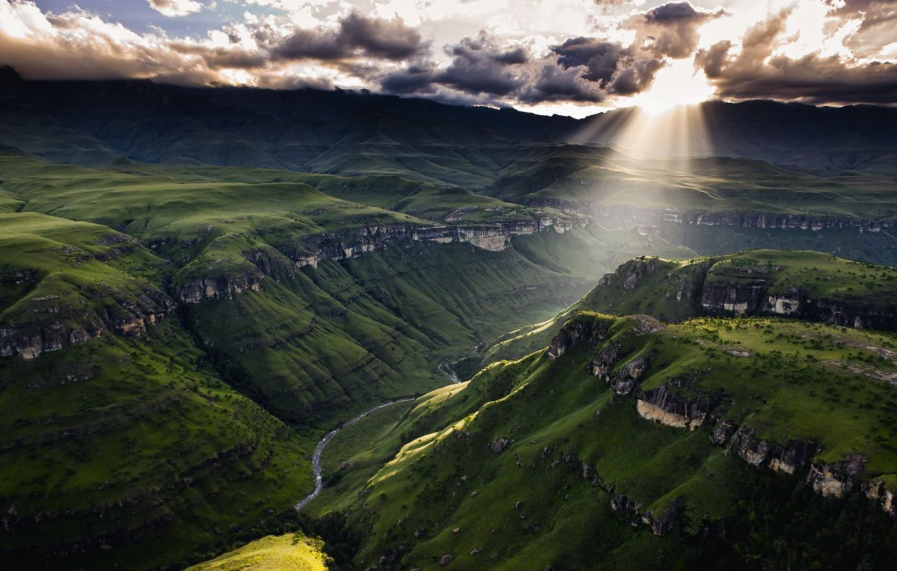

Drakensberg Mountains
The Drakensberg Mountains are one of South Africa’s most stunning natural landscapes, featuring towering cliffs, cascading waterfalls, and verdant valleys. This UNESCO World Heritage site is perfect for hiking, photography, and outdoor adventures.
Visitors can explore trails of varying difficulty, discover ancient rock art, and enjoy breathtaking panoramic views. The Drakensberg region also offers unique flora and fauna, making it a paradise for nature enthusiasts and adventure seekers alike.